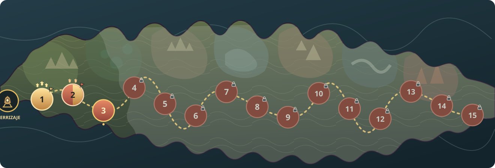

Para revisar: la costa, el recorrido oeste→este, los biomas, la escala de las regiones y la lectura de los tres estados de conquista. Todas las posiciones y el progreso son ilustrativos.
PC · mapa completo, sin desborde

3 estrellas · insignia del jugador 1–2 estrellas · insignia dividida 0 estrellas · insignia rebelde; candado si está bloqueada
En PC entran las quince zonas sin reducir el tamaño de los marcadores. No se repiten rótulos de estado; el candado mantiene identificables las zonas inaccesibles.
Celular · desplazamiento solo si hace falta
Campaña Mapa · Tarjetas
Deslizá el mapa con un dedo · tocá una zona para seleccionarla
Zona 2 · 2 estrellasInsignia mitad rebelde / mitad jugador
Prueba de ajuste · sin desplazamiento
Descartado: al encajar las quince zonas, cada marcador queda por debajo de los 56 px lógicos mínimos para tocar.
La versión móvil mantiene el arte a escala legible y permite desplazar solo el lienzo; la selección y el botón Jugar permanecen fijos. La comparación de ajuste muestra por qué no conviene encoger el mapa completo.
Decisiones que siguen abiertas a Lucas: aprobar o pedir cambios en la geografía, el tratamiento de los biomas, la forma/tamaño de las insignias y la composición móvil. Ningún asset se integra al juego hasta ese OK.